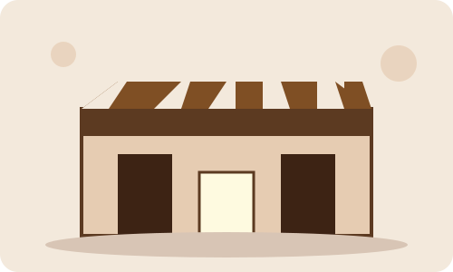

Nossa História

Fundada com o intuito de criar momentos especiais, a Café & Aconchego une grãos artesanais de alta qualidade a um ambiente acolhedor e familiar.
Venha nos visitar e experimentar os nossos preparados especiais feitos pelos melhores baristas!
Nosso Compromisso
- Ingredientes selecionados e produção artesanal.
- Atendimento próximo e personalizado.
- Ambiente pensado para trabalhar, estudar ou relaxar.